[CheckBox] DataList와 연결하여 선택 항목을 설정하기
1개요
WebSquare 스튜디오에서 DataList 작성법과 CheckBox컴포넌트에 DataList를 연결하여 선택 항목을 설정하는 예제입니다. 이 기능은 아래의 속성과 함수로 사용할 수 있습니다. - appearance : (속성)선택항목 표현방식 - setNodeSet : (함수)CheckBox컴포넌트에 DataList 바인딩 - addItem : (함수)선택 항목을 추가. index를 지정하지 않으면 하위로 추가됨. - executeSubmission : (함수)submissionID에 해당하는 submission을 실행시킨다.
2구현된 기능
CheckBox컴포넌트에 DataList 연결하기
CheckBox컴포넌트에 submission으로 연결하기
setNodeSet 함수를 이용한 DataList와 CheckBox컴포넌트 연결하기
하드코딩으로 연결하기
addItem 함수를 이용한 목록 추가하기
3예제 테스트 방법
3.1CheckBox컴포넌트에 DataList 연결하기
- STEP1. 실행 결과를 확인합니다.
아래 그림과 같이 CheckBox컴포넌트에 DataList가 연결된 것을 확인합니다.
※ WebSquare 스튜디오에서 CheckBox컴포넌트와 DataList의 연결 방법은 4.1 참고
[브라우저(Chrome) 실행 예시]
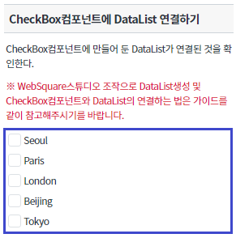
3.2CheckBox컴포넌트에 submission으로 연결하기
- STEP1. 실행 결과를 확인합니다.
아래 그림과 같이 CheckBox컴포넌트에 별도로 만들어 둔 Json파일이 submission을 통해 연결된 것을 확인합니다.
※ WebSquare 스튜디오에서 CheckBox컴포넌트와 Json파일의 연결 방법은 4.2 참고
[브라우저(Chrome) 실행 예시]

3.3setNodeSet 함수를 이용한 DataList와 CheckBox컴포넌트 연결하기
- STEP1. 버튼을 클릭 합니다.
버튼 DataList를 CheckBox컴포넌트에 연결하기를 클릭합니다.
버튼에 있는 setNodeSet() 함수로 인해 CheckBox컴포넌트에 DataList가 설정됩니다.
[브라우저(Chrome) 실행 예시]
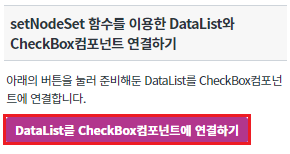
- STEP2. 실행 결과를 확인합니다.
아래의 이미지와 같이 CheckBox컴포넌트에 DataList가 설정되어 화면에 표시되는 것을 확인합니다.
[브라우저(Chrome) 실행 예시]
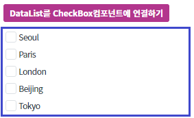
3.4하드코딩으로 연결하기
- STEP1. 실행 결과를 확인합니다.
아래 그림과 같이 하드코딩으로 CheckBox컴포넌트에 DataList가 연결된 것을 확인합니다.
※ 하드코딩으로 추가하는 법은 4.3 참고
[브라우저(Chrome) 실행 예시]
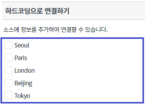
3.5addItem 함수를 이용한 목록 추가하기
- STEP1. 버튼을 클릭 합니다.
버튼 목록 추가하기 를 클릭합니다.
버튼에 있는 addItem() 함수로 인해 CheckBox컴포넌트의 항목이 추가됩니다.
[브라우저(Chrome) 실행 예시]
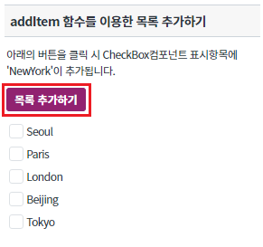
- STEP2. 실행 결과를 확인합니다.
아래의 이미지와 같이 CheckBox컴포넌트의 항목에 'NewYork'이 추가되어있는 것을 확인합니다.
[브라우저(Chrome) 실행 예시]
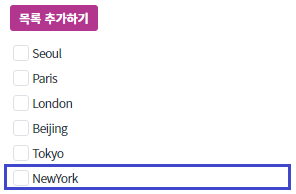
4구현 예시
4.1CheckBox컴포넌트에 DataList 연결하기
- STEP1. 더블 클릭하기
WebSquare 스튜디오에서 DataList와 연결하고 싶은 CheckBox컴포넌트를 더블 클릭합니다.
[브라우저(Chrome) 실행 예시]
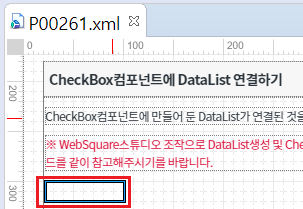
- STEP2. NodeSet 설정하기
'CheckBox 설정 팝업' 창에서 'BindItemSet' 체크박스를 체크 후, 'NodeSet'에서 만들어둔 DataList를 선택합니다.
[브라우저(Chrome) 실행 예시]
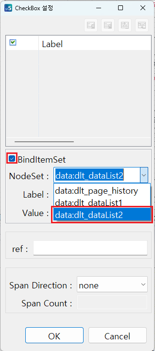
- STEP3. Label, Value 설정하기
DataList에 설정해둔 Label, Value를 선택하고 'OK' 버튼을 클릭하여 설정창을 닫습니다.
[브라우저(Chrome) 실행 예시]
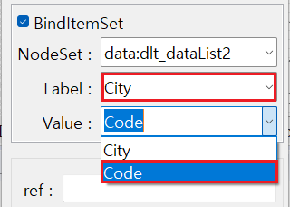
- STEP4. 실행 결과를 확인합니다.
아래 그림과 같이 CheckBox컴포넌트에 DataList가 연결된 것을 확인합니다.
[브라우저(Chrome) 실행 예시]
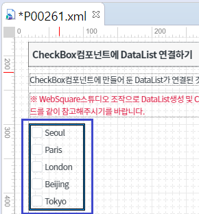
4.2CheckBox컴포넌트에 submission으로 연결하기
- STEP1. 더블 클릭하기
WebSquare 스튜디오에서 DataList와 연결하고 싶은 CheckBox컴포넌트를 더블 클릭합니다.
[브라우저(Chrome) 실행 예시]
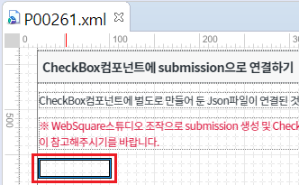
- STEP2. NodeSet 설정하기
'CheckBox 설정' 팝업 창에서 'BindItemSet' 체크박스를 체크 후, 'NodeSet'에서 만들어둔 DataList를 선택합니다.
[브라우저(Chrome) 실행 예시]
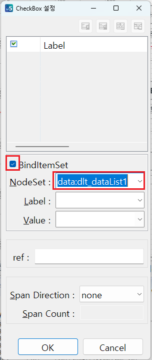
- STEP3. Label, Value 설정하기
DataList에 설정해둔 Label, Value를 선택하고 'OK' 버튼을 클릭하여 설정창을 닫습니다.
[브라우저(Chrome) 실행 예시]
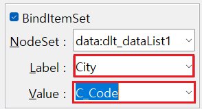
- STEP4. 실행 결과를 확인합니다.
아래 그림과 같이 DataList에는 데이터 설정을 해두지 않았기 때문에 아무것도 설정되지 않은 것을 확인할 수 있습니다. 지금부터 submission을 통해 .json파일과 DataList를 연결해보겠습니다.
[브라우저(Chrome) 실행 예시]
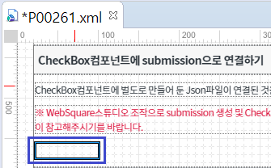
- STEP5. Submission탭을 클릭합니다.
아래 그림과 같이 Submission탭을 클릭 후 Add Submission버튼을 클릭합니다.
[브라우저(Chrome) 실행 예시]
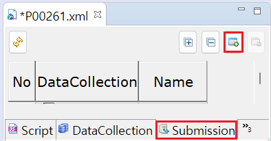
- STEP6. submission에 관한 정보를 입력합니다.
아래 그림과 같이 Add Submission창에서 submission에 관한 정보를 입력하고 OK버튼을 누릅니다.
ID에는 submission에 부여하고 싶은 ID를 입력합니다.
Target에는 연결하고 싶은 DataList명을 입력합니다.(STEP2와 동일한 DataList)
URL Action에는 .json파일이 위치한 곳의 패스와 파일명을 입력합니다.
[브라우저(Chrome) 실행 예시]
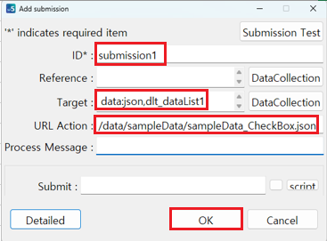
- STEP7. 함수를 정의합니다.
submission을 실행시키기 위해 아래의 함수를 사용합니다.
[선택] executeSubmission // submissionID에 해당하는 submission을 실행시킨다.
- STEP2. executeSubmission를 사용하여 submission을 실행합니다.
[소스 코드 예시]
scwin.onpageload = function () { // submission 'submission1'을 실행합니다. $p.executeSubmission("submission1"); };
4.3setNodeSet 함수를 이용한 DataList와 CheckBox컴포넌트 연결하기
- STEP1. CheckBox의 함수를 정의합니다.
CheckBox컴포넌트에 DataList를 설정하기 위해 아래의 함수를 사용합니다.
[선택] setNodeSet // CheckBox컴포넌트와 DataList를 연결
- STEP2. setNodeSet를 사용하여 CheckBox컴포넌트에 값을 설정합니다.
[소스 코드 예시]
/** * 버튼 [DataList를 CheckBox컴포넌트에 연결하기] 클릭 시 */ scwin.btn_ex1_onclick = function (e) { // CheckBox 'cbx_exam3'에 DataList 'dlt_dataList2'을 연결합니다. cbx_exam3.setNodeSet("data:dlt_dataList2", "City", "Code"); };
4.4하드코딩으로 연결하기
- STEP1. 아래의 [소스 코드 예시] 처럼 소스 코드를 추가합니다.
<xf:select1> 태그 밑에 있는 하위 태그를 다음과 같이 추가합니다.
[소스 코드 예시]
<xf:select appearance="full" cols="1" id="cbx_exam4"> <xf:choices> <xf:itemset nodeset="data:dlt_dataList2"> <xf:label ref="City"></xf:label> <xf:value ref="Code"></xf:value> </xf:itemset> </xf:choices> </xf:select>
4.5addItem 함수를 이용한 목록 추가하기
- STEP1. CheckBox의 함수를 정의합니다.
CheckBox컴포넌트에 표시 항목을 늘리기 위해 아래의 함수를 사용합니다.
[선택] addItem // 선택 항목을 추가. index를 지정하지 않으면 하위로 추가됨.
- STEP2. addItem을 사용하여 CheckBox컴포넌트에 값을 설정합니다.
[소스 코드 예시]
/** * 버튼 [목록 추가하기] 클릭 시 */ scwin.btn_ex2_onclick = function(e) { // CheckBox 'cbx_exam5'의 표시목록을 추가합니다. cbx_exam5.addItem("NY", "NewYork", "5"); };
5주요 API
appearance
setNodeSet
addItem
6참고 문서
[웹스퀘어5 SP5 개발 가이드] CheckBox
링크 : https://docs1.inswave.com/sp5_user_guide/8df43d1f59fab704#27cc3703f47a5f30
[웹스퀘어5 SP5 개발 가이드] CheckBox 직접입력
링크 : https://docs1.inswave.com/sp5_user_guide/8df43d1f59fab704#882a7e63c3d4c4ec
[웹스퀘어5 SP5 개발 가이드] CheckBox DataList와 바인딩
링크 : https://docs1.inswave.com/sp5_user_guide/8df43d1f59fab704#386fa1b55a4bda6a
7참고 동영상
CheckBox 직접입력
링크 : https://youtu.be/oWlUmnfkBeA
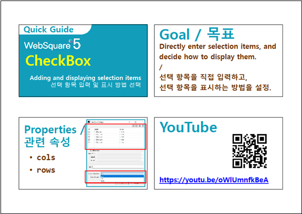
CheckBox DataList와 바인딩
링크 : https://youtu.be/lVMQGUW8HS0
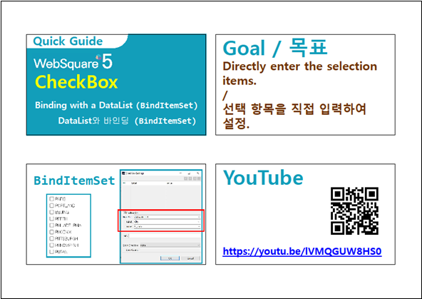